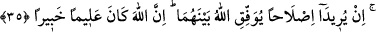

Zira teni güzel olana güzel denmez
Kemâl ehli kadın ricâlden sayılır
Eksik adam eksik kadın gibi sayılır.
35- Eğer karı kocanın aralarının açılmasından korkarsanız, erkeğin ailesinden bir
hakem ve kadının ailesinden bir hakem gönderin. Eğer barışmak isterlerse Allah
aralarını bulur; şüphesiz Allah her şeyi bilen, her şeyden haberdar olandır.
Âyette geçen “şikâk” kelimesi, muhâlefet demektir, çünkü arası açık olan eşlerden
herbiri diğerine meşakkat verecek şeyleri ister ya da herbiri diğerinin bulunduğu
taraftan başka taraftadır.
Ey hâkimler! “Eğer karı-kocanın aralarının açılmasından korkarsanız,” yâni
aralarında bir anlaşmazlık çıkmasından korkar, böyle birşey olduğunu bilir, yâhut tahmin
eder de bu hırçınlığın hangisinden kaynaklandığını bilemezseniz aralarını bulmak için
karıyla kocaya, erkeğin ailesinden hakemlik ve arabulucuğa elverişli, âdil, erkek “bir
hakem ve kadının ailesinden” aynı vasıfları hâiz diğer “bir hakem gönderin.” Çünkü
akrabalar, birbirlerinin gizli hallerini daha iyi bilir, aralarının düzelmesini ve iyi
yaşamalarını daha çok ister, onları daha çok teskin ederler. Çünkü eşler onlara itimat
ederler ve gönüllerinde birbirlerine taşıdıkları sevgi ve öfkeyi onlara açıklarlar.
“Eğer” karı koca “barışmak” yâni aralarındaki anlaşmazlığı gidermek “isterlerse
Allah aralarını bulur.” Hakemlerin güzel gayreti sayesinde karı kocanın anlaşmasını,
birbirine ısınmasını sağlar, içlerine muhabbet ve şefkat tohumları atar. Burada elde
etmek istediği şey hakkında niyetini hâlis tutan kimseyi Allah’ın bu arzusuna ulaşmaya
muvaffak kılacağına tenbîh vardır.
İbn Abbas (r.a.) der ki: Anlaşmazlık bulunduğunu kesin olarak bilmek, hakem
göndermeye mâni değildir. Çünkü hakem, bu anlaşmazlığın bilfiil var olduğunu anlamak
için değil, anlaşmazlığı gidermek maksadıyla gönderilir.
“Şüphesiz Allah” zâhir ve bâtın “her şeyi bilen, her şeyden haberdar olandır.”
Dolayısıyla anlaşmazlığı kaldırıp yerine uzlaşmayı nasıl koyacağını da bilir.
Âyette arabuluculuk teşvik edilmektedir. Rasûlullah (s.a.v): “Size namazın, orucun
ve zekâtın derecesinden daha üstün bir ameli bildireyim mi?” buyurunca oradakiler:
“Evet, yâ Rasûlallah” dediler. Hz. Peygamber (s.a.v): “İnsanların arasını
düzeltmektir” buyurdu.[28]
Yine Peygamber Efendimiz (s.a.v): “Din nasîhattır.” buyurdu ve bunu üç kez
tekrarladı. Oradakiler: “Kimin için nasîhattır, ya Rasûlallah?” dediklerinde Efendimiz:
“Allah, Rasûlü, Kitabı, mü’minlerin yöneticileri ve tüm mü’minler için nasîhattır.”